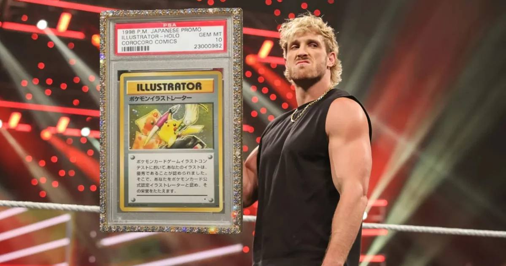

After the $16.49 million Pikachu sale, Logan Paul's next Pokémon move is RipIt — digital packs, graded slabs, and a referral race
Logan Paul sold his PSA 10 Pikachu Illustrator for a record $16.49 million in February. His next act is RipIt, a Pokémon-first platform selling digital packs with a real graded slab inside — and a waitlist leaderboard that pays top inviters in high-end cards.

Disclosure: this post contains affiliate links. I earn a commission on qualifying purchases.
What happened
Logan Paul is not done with Pokémon. Not even close.
After selling his PSA 10 Pikachu Illustrator — the only perfect-10 copy of the 1998 card in existence — for a record $16,492,000 at Goldin in February 2026, Paul has turned his attention to his next collectibles venture: RipIt, a Pokémon-first platform built around digital packs that contain real, graded cards. He bought that Pikachu for $5,275,000 in 2021, a Guinness World Record private sale at the time, and walked away with roughly three times his money. Now he wants to sell the hobby itself back to the hobby.
What RipIt actually is
RipIt is not a card shop, at least not yet. Right now it works like a gamified waitlist: collectors join, climb a referral leaderboard, and the top inviters earn high-end Pokémon cards as rewards. It is available in the US only for now.
The product itself is simple. RipIt sells digital packs priced from $25 up to $1,000, and every pack contains one fully-graded slab — a real, authenticated card, not a digital token. Pokémon packs are the biggest sellers, with baseball, basketball, and football packs alongside them. Reviewers note the packs carry a gritty, authentic look, with references to Paul's WWE career and to the CoroCoro #223 magazine — which can be pulled as a mega drop from any pack, valued at around $150,000.
Paul teased the venture on stream right after the Pikachu sale, and he has been promoting it through his channels ever since — including using a September livestream to push the platform.
The $1.2 million night that set it up
If RipIt is the business, the October 29 livestream was the advertisement. On October 29 at 6 p.m. ET, Paul went live on YouTube to rip open about $1.2 million worth of vintage Pokémon product: two sealed 2002 Legendary Collection booster boxes, worth roughly $400,000 combined, and two unpeeled 1996 CoroCoro sheets, worth about $400,000 each.
The sheets are the gamble. They feature the first two Pokémon cards ever printed — Pikachu and Jigglypuff — and Paul said a PSA 10 on the CoroCoro Pikachu could be worth more than $5 million. The boxes added 72 packs of Legendary Collection, the hottest vintage set in the hobby right now, where chase cards like the reverse holo Pikachu and Gengar have reached $400,000-plus in PSA 10. Paul also auctioned individual packs from the boxes on Goldin ahead of the stream, with one lot already at $9,500 with days left to run.
Is he actually into it, or is this another scheme?
That is the question that follows Paul everywhere in this hobby, and the honest answer is: both things can be true.
Polygon, in an October 31 piece, argued Paul has proved at least some of his critics wrong. He has spent nearly $3 million chasing pristine copies of the early Pokémon cards that came packaged in a magazine's sticker sheet — cards that are notoriously hard to find in perfect condition — and bought sealed boxes of old Pokémon cards for $400,000. In a recent video, he described the collector's pull in plain terms: he saw something he had to have, got obsessed, and spent a year on the quest to get it. The money is real, and so, apparently, is the obsession.
But the skepticism is not invented either. Paul has been accused for years of ruining the hobby, of clickbait, and of profiting off hype he helps create. His September shiny-hunting livestream — a marathon attempt to catch a shiny Onix and evolve it into a golden Shiny Steelix — ended with the shiny never caught and the stream never resumed. And his earlier Liquid Marketplace fractional sale of the Pikachu card, where he sold 51% of the card before later selling it outright, remains a sore spot for critics. Ontario's securities tribunal ruled against the Liquid companies and two co-founders in September 2026; Paul himself is not a defendant.
Why it matters
Whatever you think of Logan Paul, he is the single biggest mainstream amplifier the Pokémon hobby has. A $16.49 million card sale made the evening news. A $1.2 million rip puts vintage Pokémon in front of millions of viewers who have never been to a card shop. And RipIt — packs, slabs, leaderboards, referral rewards — is his attempt to turn that attention into a permanent business, not just a one-night stream.
The hobby has spent five years arguing about whether Logan Paul is good for Pokémon. The market has answered: the cards keep going up, the streams keep getting bigger, and now he owns the platform too.
Shop Pokémon TCG
Sources
• Logan Paul Just Proved His 'Pokémon' Haters Wrong (Polygon)
• Logan Paul Announces $1.2 Million Pokémon Stunt, and It Might Be Worth a Lot More (Men's Journal)
• Logan Paul Plans $1.2M Pokemon Card Opening (PokeForecast)
• Ripit: Meet Logan Paul's New Collectibles Platform (CryptoZoo World)
• Ripit Review 2026: Are Ripit Packs Worth the Money? (TheSpike.gg)
• YouTuber Logan Paul's Latest Pokémon Scheme Was A Total Flop (Polygon)